Vision-Language-Action (VLA) models have shown strong promise for general-purpose robotic manipulation, but their real-world evaluation remains limited by a lack of accessible, reproducible, and consistent benchmarks. Simulation benchmarks fail to capture real-world complexity, while existing real-world benchmarks often require expensive hardware, centralized evaluation, or are limited in task diversity. We introduce VLA-REPLICA, a low-cost, easily reproducible real-world benchmark for evaluating VLA models. Built from off-the-shelf components, our system can be quickly assembled and replicated across laboratories, providing a consistent environment for policy evaluation anywhere in the world. VLA-REPLICA includes a diverse suite of manipulation tasks and a small-scale demonstration dataset for target-domain adaptation, with real-world evaluation protocols for both in-distribution and out-of-distribution settings. Experiments with imitation learning and state-of-the-art VLA models reveal model strengths and limitations, while consistent results across independently constructed setups demonstrate the reproducibility of our benchmark.

Overview of the VLA-Replica benchmark. (a)1. Hardware components. (a)2. Our assembled platform with the SO-101 follower arm, the light box, the cameras, and the manipulation workspace. (b) 10 manipulation tasks in the benchmark.
A user with no prior knowledge of the benchmark was able to build the setup within one hour.
Follow the Setup Guide to build yours!
If the embedded player does not start, open the video in Google Drive or download the MP4.
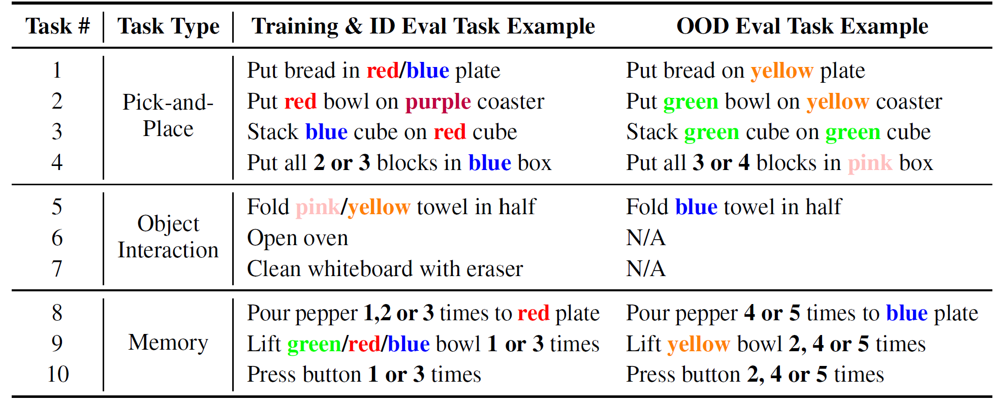
Task definitions and examples for training/ID (in-distribution) and OOD (out-of-distribution) evaluation
Examples of expert demonstrations collected in our dataset. We provide 50 demonstrations for each task, which can be used for training or fine-tuning. The dataset can be downloaded from huggingface.
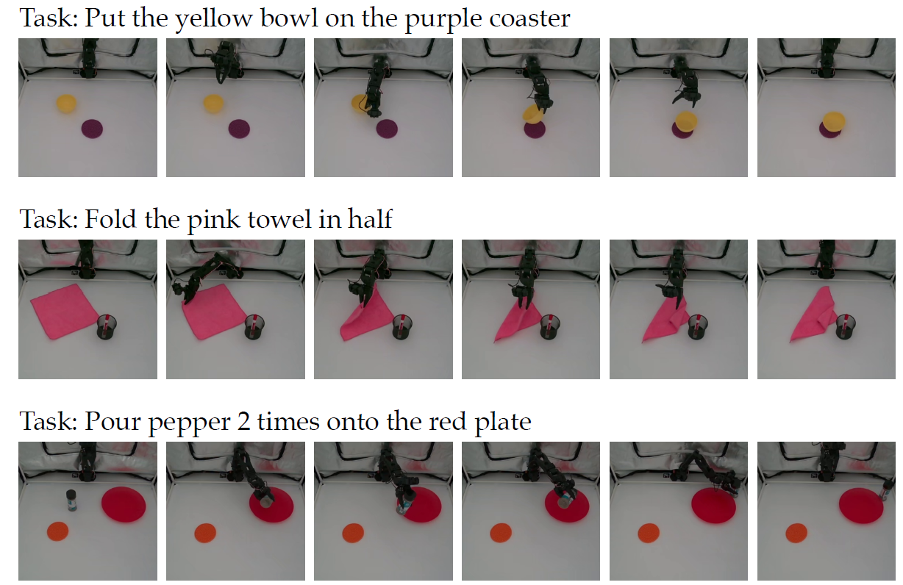
We provide 90 test scene reference images as shown below. For all tasks, the first row includes ID (in-distribution) tasks, and the second row includes OOD (out-of-distribution) tasks (except 5 & 6). Details of these tasks can be found here. These reference images are already included in our github repo for evaluation.
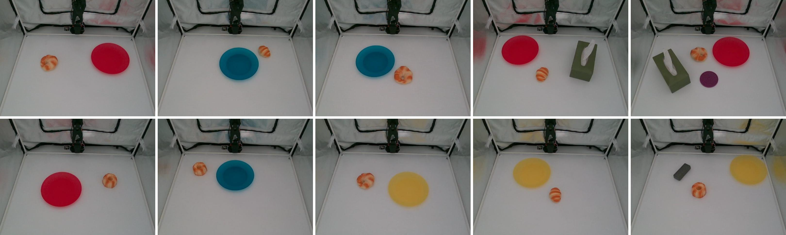
Task 1: Put bread on plate
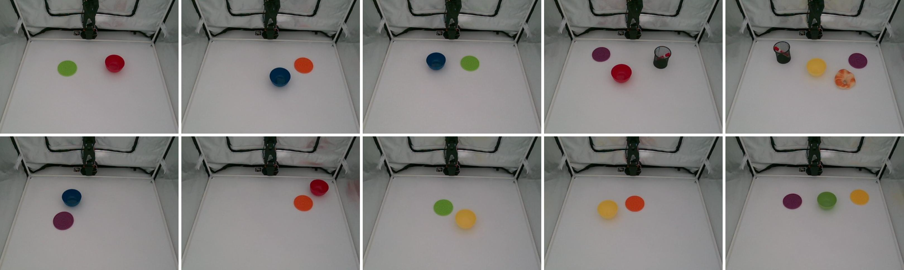
Task 2: Put bowl on coaster
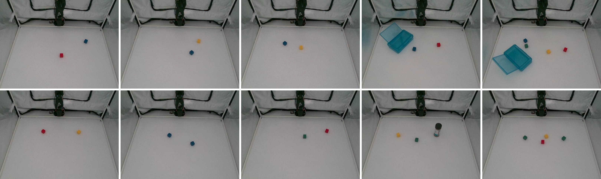
Task 3: Stack blocks
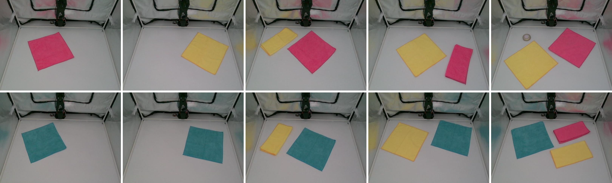
Task 4: Fold towel
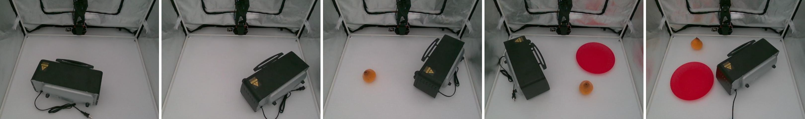
Task 5: Open oven
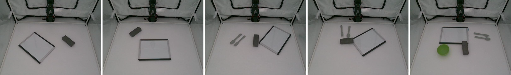
Task 6: Clean whiteboard
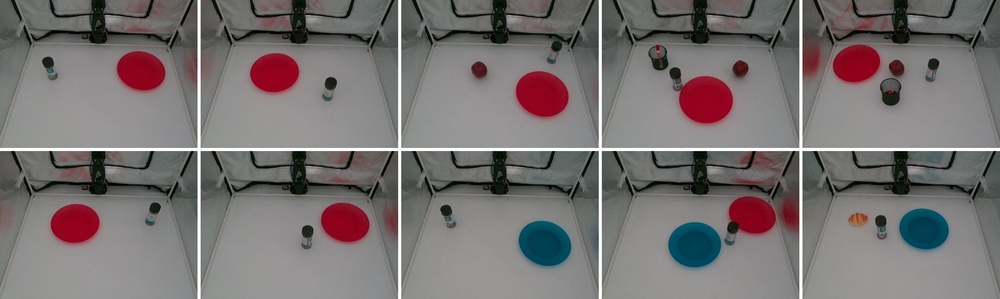
Task 7: Pour pepper
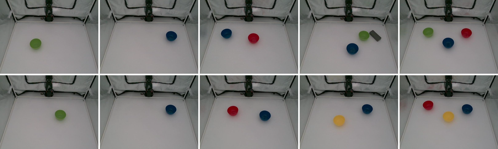
Task 8: Lift bowl
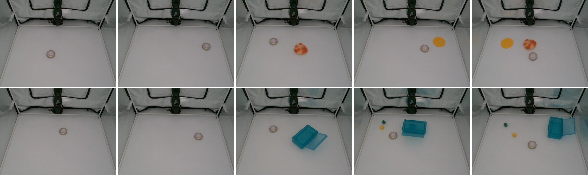
Task 9: Press button
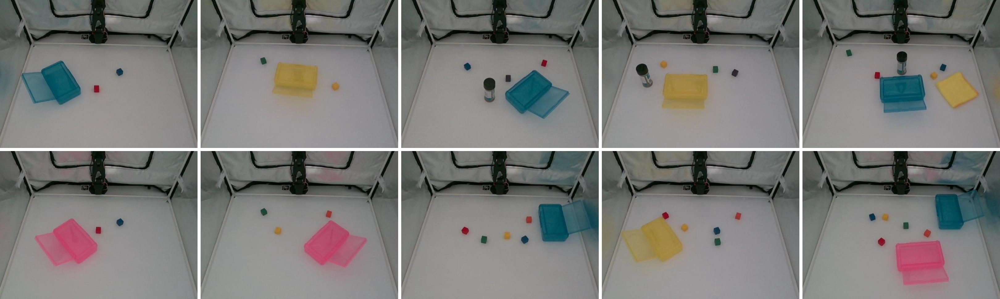
Task 10: Collect blocks
Policy evaluation success rates on the VLA-Replica benchmark are shown below for in-distribution and out-of-distribution evaluation.
There are two ways to submit results to the leaderboard: (1) Run the VLA-Replica-ID and VLA-Replica-OOD benchmark scenes and share your evaluation videos with the authors. (2) Submit a model checkpoint through Hugging Face, and the authors will evaluate your checkpoint. Contact the authors if you want to add your method.
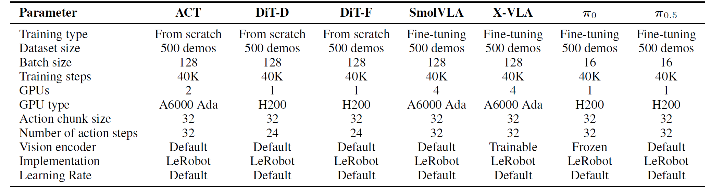
Training and fine-tuning details for the evaluated policies
@misc{huang2026vlareplicalowcostreproduciblebenchmark,
title={VLA-REPLICA: A Low-Cost, Reproducible Benchmark for Real-World Evaluation of Vision-Language-Action Models},
author={Alex S. Huang and Jiahui Zhang and Shiqing Tang and Yu Xiang},
year={2026},
eprint={2605.20774},
archivePrefix={arXiv},
primaryClass={cs.RO},
url={https://arxiv.org/abs/2605.20774}
}
Send any comments or questions to Alex Huang | Jiahui Zhang:
alex.huang@utdallas.edu | jiahui.zhang@utdallas.edu
This work was supported in part by the National Science Foundation (NSF) under Grant Nos. 2346528 and 2520553, the NVIDIA Academic Grant Program Award, and a gift funding from XPeng.